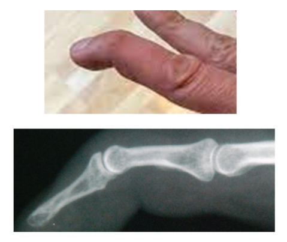
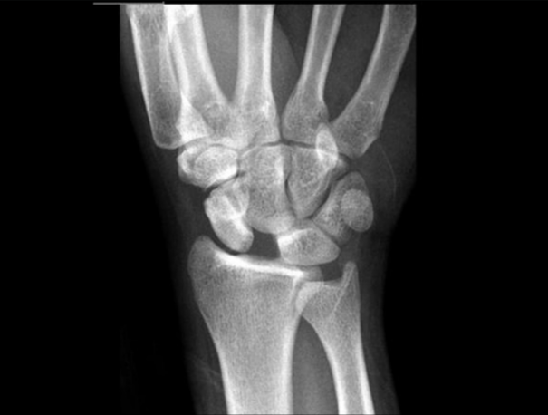

Chapter 4 2021 (Invictus)
Tähän yhteyteen laitettu vain ne kysymykset, joita ei ollut aiemmassa vuoden 2020 tentissä.
4.1 Miten tämän potilaan malletsormi (vasarasormi) hoidetaan?

Valitse yksi:
- Lastoitus 2vk ajan
- Lastoitus 6vk ajan
- Teippaus viereiseen sormeen 4vk ajan
- Leikkaushoito
Solution.
bOjentajajänteen vaurio sormen DIP-nivelseudussa aiheuttaa kärkijäsenen ojennusvajauksen (mallet-deformiteetti). Vamma voi syntyä suljettuna tai avoimena joko jänteen katkeamisena tai liittyä distaalifalangin murtumaan. Tässä yhteydessä nyt ei ole murtumaa todettavissa.
Hoidetaan tyypillisesti konservatiivisesti DIP-nivel lastalla hyperekstensioon n. 6 viikon ajaksi. Hoidon aikana DIP-niveltä ei saa koukistaa. Lastoitusta kannattaa kokeilla, vaikka hoidon aloitus olisi viivästynyt. Jatkohoitona lastaa kannattaa pitää vielä 8 viikon ajan öisin.
Leikkaushoito on indikoitua, jos mallet-fracturessa fragmentti ei reponoidu, sen koko käsittää lähteestä riippuen 1/3 tai 1/2 tai enemmän nivelpinnasta ja diastaasi on yli 2 mm
4.2 Oheisen kuvan potilaalla on

Valitse yksi:
- Lunotriquetraalisen ligamentin repeämä
- Skafolunaarisen ligamentin repeämä
- Perilunaarinen luksaatio
- Veneluun murtuma
Solution.
bSkafolunaariligamentin vaurio on yleisin ranteen ligamenttivaurio. Vamma syntyy yleisimmin kaaduttaessa ja potilaan ottaessa vastaan ojennetulla kädellä. Ligamenttivamma voi olla itsenäinen tai liittyä esimerkiksi radius- tai skafoideummurtumaan.
Röntgenissä näkyy SL-välin leveäminen (tyypillisesti alle 2mm)
Epäiltäessä skafolunaarista vauriota potilaan lähettämisessä käsikirurgiseen arvioon ei ole syytä viivytellä, sillä nivelsidekorjaus voidaan yleensä tehdä akuutissa vaiheessa 4‒6 viikon sisällä vammasta. Hoitamattomana SL-välin avautuminen voi jatkua ja johtaa etenevään artroosiin (SLAC = scaphoid lunate advanced collapse), jonka hoitona on ranteen osittainen tai täydellinen luudutus.
4.3 Osteosarkooma
Valitse yksi:
- On tavallisin maligni rustotuumori
- Ennuste 30% yli 5 vuotta
- Hoitona pre- ja postoperatiivinen systostaatti, radikaaliresektio ja rekonstruktio
- Yleisin yli 65-vuotiailla, metafyysialue
Solution.
ca: On tavallisin primaarinen maligni luutuumori. Tavallisin primaarinen maligni rustoa tuottava tuumori on kondrosarkooma.
b: 5-vuotiselossaoloennuste on n. 70-80% (parantunut huomattavasti viime vuosikymmeninä). Ennuste tosin on alle 30% metastaattisessa taudissa
d: Yleisin lapsilla ja nuorilla aikuisilla (useimmiten alle 25v). Ilmenee vastauksen mukaan kuitenkin useimmiten metafyysialueilla (varsinkin polven ympärillä eli distaalisessa femurissa tai proksimaalisessa tibiassa).
4.4 Nilkkamurtuma
Valitse yksi:
- Weber C-tyypin murtumissa syndesmoosi ei käytännössä repeä
- Lateraalimalleolin Weber A-tyypin murtumat voidaan hoitaa yleensä konservatiivisesti
- Mediaalimalleolin murtuma liittyy aina Weber B-tyypin murtumaan
- Jos lateraalimalleolin murtuman dislokaatio on alle 2mm, ei leikkaushoito ole tarpeen, vaikka nivelhaarukka näyttäisi hieman leveältä
Solution.
ba: Weber C-murtumissa syndesmoosi käytännössä aina repeää.
b: Weber A-murtumat ovat yleensä stabiileja, jonka takia ne voidaan hoitaa konservatiivisesti (tyypillisesti ortoosi tai kipsihoito 1-3 viikkoa; varaus kivun mukaan)
c: Mediaalimalleolin murtuma voi esiintyä monissa yhdistelmissä, mutta useimmiten tapahtuvat Weber C-murtumien yhteydessä.
d: Leikkaushoito on tarpeen, jos nivel on instabiili ja yksi tämän merkki on inkongruentti nivelhaarukka röntgenissä.
4.5 Olkaluun yläosan murtuma
Valitse yksi:
- Stabiili lukkoruuvilevytys estää kaputnekroosin kehittymisen dislokoituneissa pirstaleisissa murtumissa
- Murtumien ilmaantuvuus on laskussa
- Pirstaleisten murtumien hoidossa käänteinen tekonivel on yleistynyt viime vuosina
- Luksaatiomurtuma on usein ensiavussa helposti reponoitavissa
Solution.
c; Käänteistekonivel ei salli suurta rasitusta, mutta se ei myöskään vaadi toimivaa kiertäjäkalvosinta. Erityisesti vanhusten luksaatiomurtumissa käänteistekonivel suosittu (puolitekonivel nuoremmilla) ja osteosynteesi taas ensisijainen nuorien dislokoituneissa murtumissa. a: Lukitusruuvilevy ei estä kaputnekroosia; se parantaa stabiilisuutta, mutta verenkiertohäiriö voi silti johtaa nekroosiin
b: Olkamurtumien ilmaantuvuus ei ole laskussa (nousussa väestön ikääntyessä)
d: Luksaatiomurtumat ovat vaikeita reponoida
4.6 Viidennen kämmenluun kaulan (Boxerin) murtuman yleisin hoitomuoto:
Valitse yksi
- Seuranta ilman toimenpiteitä
- Leikkaushoito
- Pikkurilli ja nimetön kipsataan SAFE-asentoon
- Pikkurilli teipataan viereiseen sormeen
Solution.
dJos Boxerin murtumassa todetaan hyväksyttävä asento (nivel on kongruentti ja angulaatio alle 45-60 astetta eikä kiertovirhettä) ja potilas saa ojennettua sormen suoraksi, niin murtuma hoidetaan konservatiivisesti teippaamalla sormi viereiseen nimettömään n. 4 viikon ajaksi
4.7 Solisluun murtumat
Valitse yksi
- Keksikolmanneksen murtumat ovat yleisimpiä
- Keskikolmanneksen murtuamt hoidetaan yleensä konservatiivisesti
- Kaikki kysymyksen vastausvaihtoehdot ovat oikein
- Leikkausta harkitaan, jos dislokaatiota murtumassa on yli luunpaksuuden verran
Solution.
c4.8 Hiihtäjän peukalo
Valitse yksi
- Hoidetaan yleensä ilman röntgenkuvausta
- On peukalon koukistajanjänteen sulkeinen repeämä
- Vaatii leikkaushoitoa, jos nivel on epätukeva
- Aiheutuu peukalon metakarpofalangeaali (MCP)-nivelen vääntymisestä ulnaarideviaatioon
Solution.
ca: Vamma tulee kuvantaa
b: Hiihtäjänpeukalo = Peukalon MCP-nivelen ulnaarisen kollateraaliligamentin osittainen tai täydellinen vamma. Syntyy abdusoivan voiman vaikutuksesta eli tyypillisesti peukalon vääntyessä radiaalisesti esim. kaaduttaessa hiihtäessä.
c: Nivelen stabiliteetti on tutkittava tarkasti. Kivun takia voi olla alkuvaiheessa vaikeaa saada luotettavaa käsitystä nivelsiteen stabiliteetista. Tarvittaessa sormi puudutetaan luotettavan testaustuloksen saamiseksi tai voi immobilisoida peukalon kipsilastalla tai ortoosilla ja tutkia nivelside uudelleen muutaman päivän kuluttua. Täydelliseen repeämään viittaavat > 30°:n periksianto radiaalisuuntaan, > 15°:n ero terveeseen puoleen verrattuna ja liikealan napakan päätepisteen (end-point) puuttuminen. Instabiili nivelside hoidetaan operatiivisesti. Leikkauksen jälkeen peukalo immobilisoidaan kyynärvarteen ulottuvalla dorsaalisella kipsilastalla tai ortoosilla 6 viikon ajan.
d: Aiheutuu peukalon metakarpofalangeaali (MCP)-nivelen vääntymisestä radiaalideviaatioon. Peukalon MCP-nivelen radiaalikollateraalivamma, joka on edellistä huomattavasti harvinaisempi, syntyy taas ulnaarideviaatiossa. Hoidetaan samojen periaatteiden mukaisesti.
4.9 Luunmurtuman paraneminen
Valitse yksi
- Fractura itineraria syntyy tyypillisesti laskettelurinteessä
- Yläraajan kierteinen murtuma luutuu yleensä 12 viikossa
- Putkiluu paranee nopeammin kuin hohkaluu
- Consolidatio tarda tarkoittaa hidastunutta luutumista
Solution.
da: Fractura itineraria = rasitusmurtuma (fatigue fracture); murtumia, joille on tyypillistä kumuloiva syklinen kuormitus, joka johtaa asteittain täydelliseen murtumaviivaan muuten suhteellisen mekaanisesti terveessä luussa
b: Yläraajan kierteinen murtuma luutuu yleensä 6 viikossa (lujittuu 3 viikossa); Yläraajan poikkimurtuma taas tyypillisesti luutuu 12 viikossa
c: Hohkaluu paranee nopeammin. Hohkaluun hyvä verenkierto ja paikallisten mesenkymaalisten kantasolujen runsas määrä takaavat yleensä murtuman nopean paranemisen. Metafyysimurtumat siis luutuvat nopeammin kuin diafyysimurtumat.
d: Hidastunut luutuminen (delayed union, consolidatio tarda) tarkoittaa, että 3 kk kohdalla ei havaita kliinisiä/radiologisia merkkejä luutumisen käynnistymisestä (todetaan hetkuminen ja kipu, raaja ei kestä kuormitusta)